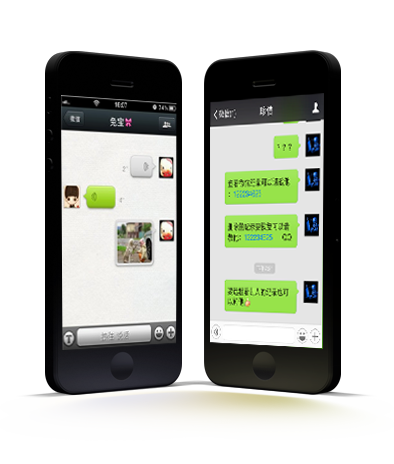
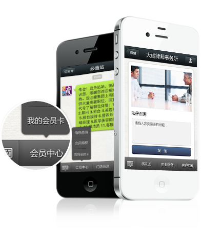
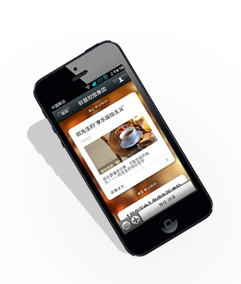
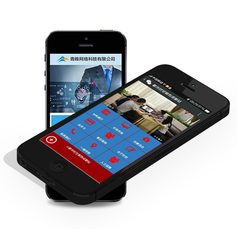
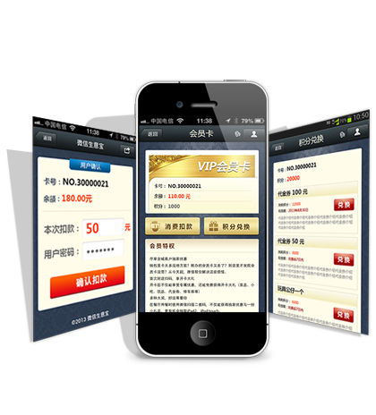
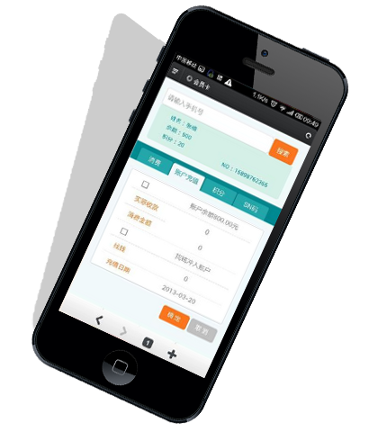
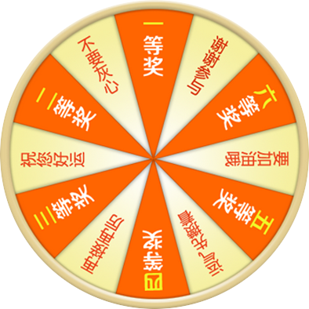

人人都在微信！客户在哪里，营销就在哪里
微信目前拥有超过4亿用户
● 微信已经成为移动互联网入口
● 微信是一个轻量级APP平台
● 微信是最好的O2O平台
● 微信营销是继微博后的最大营销机遇！
服务申请

微信公众平台=企业的自媒体+客户管理平台
● 微信公众号媒体属性:10万个粉丝等于地方性报纸;100万个粉丝
等于全国性的报纸头条新闻。
● 产品销售平台:在线购买、在线支付、促销活动。最活跃、反应
速度最快、互动最强的营销平台
● 人才招聘平台：免费的人才招聘渠道，未来人才招聘的主流渠道
● 客户：客户在线互动、客户体验、新品试用、消费者意见调研、在
线咨询甚至网上订餐、送货服务、钟点服务、上门维修等。
服务申请
微信自定义菜单 —— 打造最便捷的微信内置APP
微信营销平台提供微信公众号自定义菜单管理功能，用户无需再通过输入关键词触发回复，直接点击菜单就可以看相关的内容，微信营销平台可与企业原有Wap进行打通，复用企业APP原有功能，同时可定制个性化功能、使用HTML5新技术进行无限拓展，帮助企业打造最便捷、易推广的微信内置APP，此功能如果结合微信3G网站可以使您的公众号用户体验更好，带给粉丝不一样的感受。
服务申请

微信推送：
与公众平台无缝接入、关注图文欢迎信息
自定义图文回复、关键词匹配回复
向粉丝更直观的展示企业形象 公众平台要直接向粉丝展示企业形象和产品！
当客户首次关注时，直接推送企业形象！
当客户推送新消息，系统自行匹配公司产品关键词，自动识别并且自动生成图文消息返回给用户。
服务申请

微官网——五分钟打造超炫微信3G网站
微官网是指将企业信息、服务、活动等内容通过微信网页的方式进行表现，用户只要通过简单的设置，就能快速生成属于您自己的微信3G网站，并且有各种精美模板，供您选择，还有自定义模版，可以设计出自己的风格，不但提高了信息量，也使信息的展现更加赏心悦目，进一步提高用户体验。
服务申请

微会员卡——移动时代的社会化会员管理平台
1．有微信就有会员卡：面向5亿微信用户，扫一扫即刻发放电子会员卡，锁定客户，弹指之间。省去传统会员卡办理繁琐手续。
2．降低发卡成本 提升用户体验：无需收银员介入，无需制作会员卡片。节约大量人力，财力，办卡效率更高
3．新潮流行，更乐于接受：新潮流行市场的办理会员卡方式，由抵触心态转换为好奇，积极参与的心态
服务申请

微统计
粉丝增长统计、消息推送统计
实时数据统计、监控运营效果
信营销平台可以实时统计微信公众号的粉丝关注情况和用户推送请求数，根据统计对相关推广营销活动效果及某些敏感因素对您的影响作出判断，并对相关市场行为作出相应调整，从一定程度上实现了对市场的监控与及时应对。
服务申请

微信大转盘 互动营销 引爆人气
微信大转盘，微信公众号营销顶级神器！
微信营销是一种新型的营销模式，由于微信更重视用户之间的互动，故而这种营销推广不不能盲目地套用微博营销的单纯大量广告推送方式。这种方式在微信营销中的效果非常差，会令用户反感，继而取消去企业或商家的微信公众账号关注。对于企业来说，做微信推广重要的一个方面就是提高用户和公众账号之间的黏度，而微信大转盘、微信优惠券是其中最具杀伤力的活动。
开启大转盘功能，直接发布幸运大转盘活动，设置活动内容、奖项及中奖比例，带给粉丝完全不同的感受。
服务申请
